Hello, I'm Shankeerthan Srinivasan
IT Student • Aspiring Data Analyst • Web Developer • Problem Solver
BSc Information Technology undergraduate with a strong passion for solving real-world problems through Data Science, Data Analytics, Automation, and data-driven decision-making. Enthusiastic about transforming raw data into meaningful and actionable insights, developing efficient analytical solutions, and leveraging modern technologies to improve and optimize business processes
View Projects Download CVAbout Me
I am a BSc Information Technology undergraduate with a strong passion for Data Science, Data Analytics, and Automation. I am driven by the potential of data to uncover valuable insights, support strategic decision-making, and create meaningful business impact.
With hands-on experience in Python, MySQL, Power BI, Excel, Java, JavaScript, and React, I have developed practical skills in data analysis, database management, web application development, and process automation. Through academic coursework and personal projects, I have gained experience in data visualization, business intelligence reporting, machine learning fundamentals, and developing data-driven solutions.
I am enthusiastic about leveraging technology and analytical thinking to solve real-world challenges, optimize processes, and deliver innovative solutions. Committed to continuous learning and professional growth, I am eager to apply my technical expertise and problem-solving abilities in collaborative environments while contributing to impactful, data-driven initiatives.
5+
Projects
5+
Technologies
Fresher
Experience
Education

BSc Information Technology
SLIIT
2025 - presentVipulananda Central College(N.S), Karaitivu
Ordinary Level & Advanced Level (Physical Science)
2015 - 2023R.K.M Boys' School, Karaitivu
Primary Education
2010 - 2014Languages
English
Professional
Tamil
Native
Sinhala
Conversational
Technical Skills
Programming
- Java
- Python
- JavaScript
- SQL
Tools & Tech
- Git & GitHub
- VS Code
- Machine Learning Basics
- MS Office (Excel, Word, PowerPoint)
Featured Projects
A collection of my recent work in web development and data-driven applications.
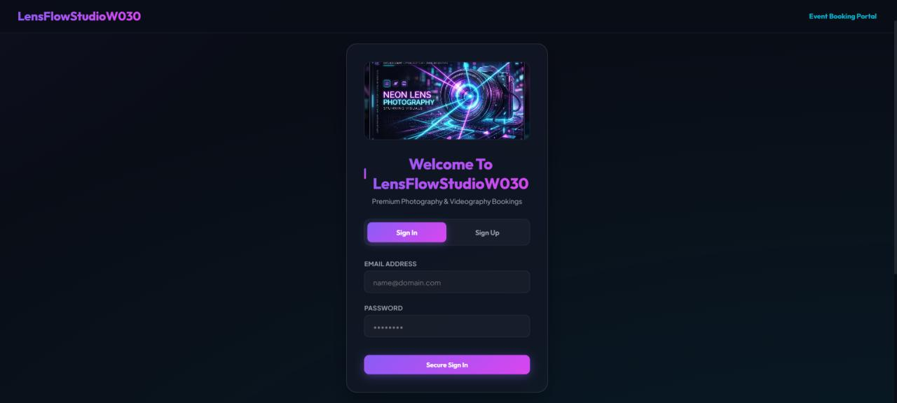
Event Photography Videography Booking System
Developed a web-based booking platform that connects clients with professional photographers and videographers.
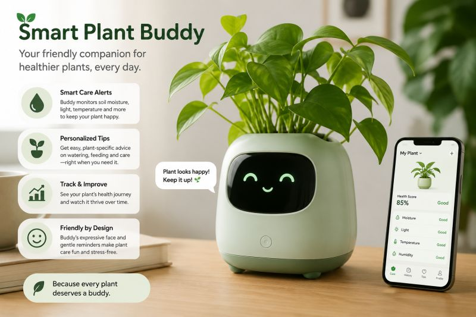
Smart Plant Buddy
Developed an IoT-powered plant monitoring system that tracks soil moisture, temperature, humidity, and light conditions.
Certifications & Achievements
View all certification folders and their contents from a single folder overview page.
🏆 Certificates Gallery
Recognition and awards from various competitions, events, and organizations.
Certification Showcase
Browse certificate images and PDFs from the portfolio collection.
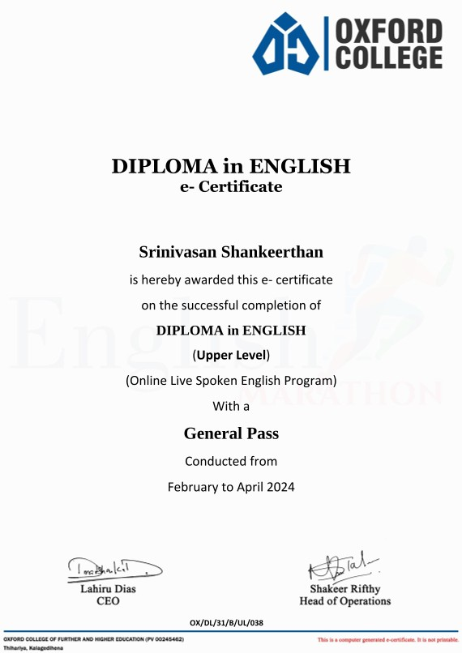
Diploma in English
Diploma in English covering grammar, vocabulary development, reading and writing skills, and effective communication techniques for academic and professional contexts.
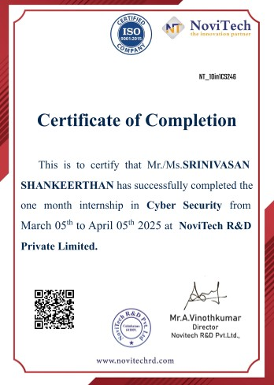
Internship in Cyber Security
Internship in Cyber Security covering core security principles, network protection, threat analysis, and hands-on experience in safeguarding systems, detecting vulnerabilities, and implementing security best practices.
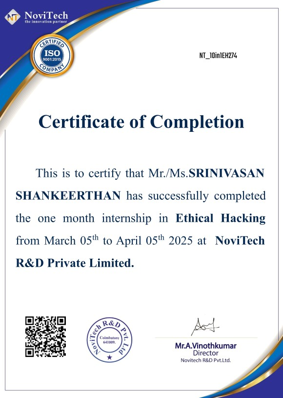
Internship in Ethical Hacking
Internship in Ethical Hacking covering cybersecurity fundamentals, vulnerability assessment, penetration testing techniques, and hands-on experience in identifying and mitigating security risks in systems and networks.
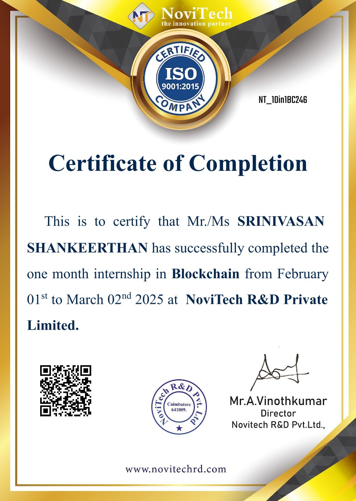
Internship in Blockchain
Internship in Blockchain covering fundamental concepts of distributed ledger technology, smart contracts, cryptocurrency basics, and hands-on experience in developing and understanding blockchain-based applications.
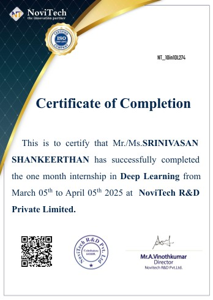
Internship in Deep Learning
Internship in Deep Learning covering neural network fundamentals, training and optimization techniques, and practical experience in building and evaluating deep learning models for real-world applications such as image and data analysis.
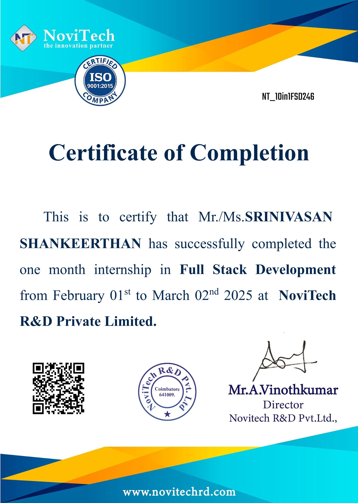
Internship in Full Stack Development
Internship in Full Stack Development covering front-end and back-end web development, database management, API integration, and hands-on experience in building and deploying complete web applications.
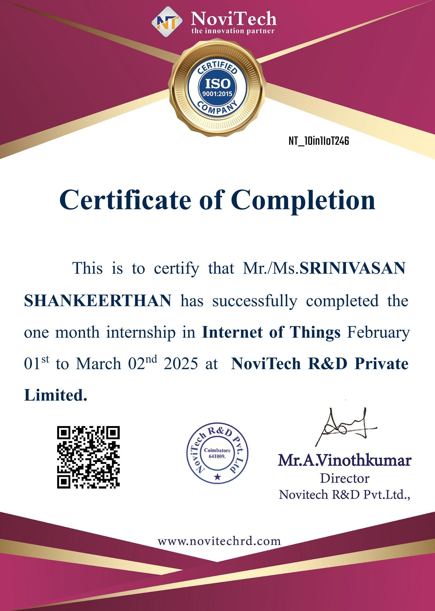
Internship in Internet of Things
Internship in Internet of Things (IoT) covering fundamentals of connected devices, sensor integration, data communication protocols, and hands-on experience in building and deploying basic IoT-based applications.
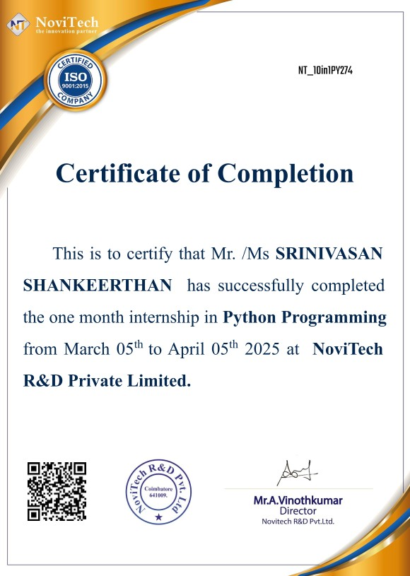
Internship in Python Programming
Internship in Python Programming covering fundamental programming concepts, data structures, problem-solving techniques, and hands-on experience in developing real-world applications using Python.
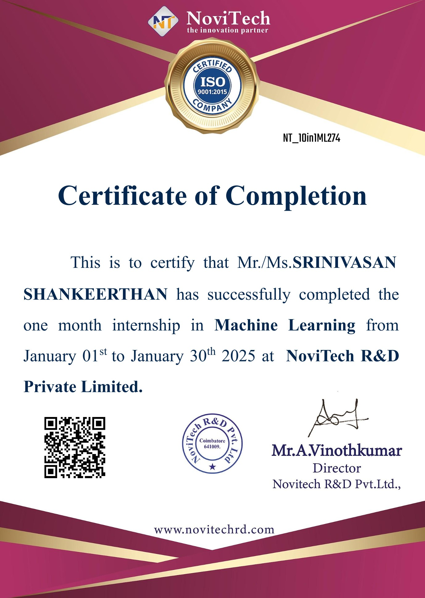
Internship in Machine Learning
Internship in Machine Learning covering core concepts of data preprocessing, model training, evaluation techniques, and practical exposure to building and deploying basic ML models for real-world applications.
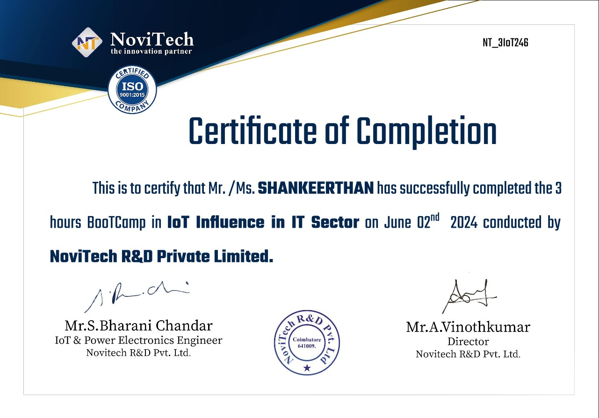
IoT Bootcamp – Influence of IoT in the IT Sector
Certification covering the fundamentals of the Internet of Things (IoT), focusing on its influence and transformation of the IT sector, including real-world applications, connectivity concepts, and emerging IoT-driven technologies.
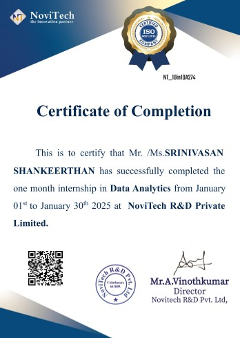
Internship in Data Analytics
Certificate recognizing successful completion of a Data Analytics internship, involving practical training in data collection, preprocessing, exploratory data analysis, visualization, and insight generation.
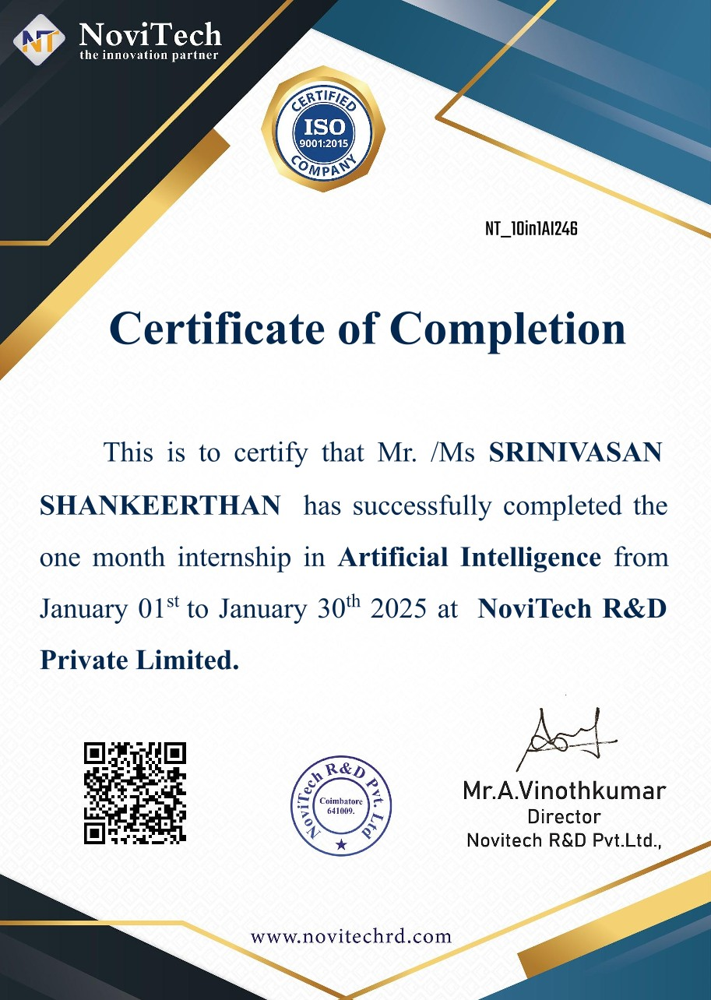
Internship in Artificial Intelligence
Certificate recognizing successful completion of a 30-day Artificial Intelligence internship, involving practical training in machine learning, data preprocessing, predictive analytics, and AI-powered problem solving.
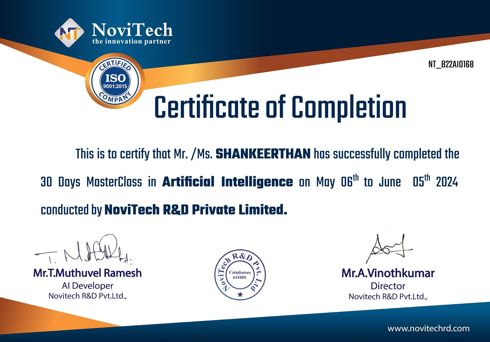
MasterClass in Artificial Intelligence
Certificate demonstrating foundational knowledge of Artificial Intelligence concepts, machine learning basics, AI applications, and data-driven problem-solving techniques.
🏆 Achievements Gallery
Recognition and awards from various competitions, events, and organizations.
Certification Showcase
Browse certificate images and PDFs from the portfolio collection.
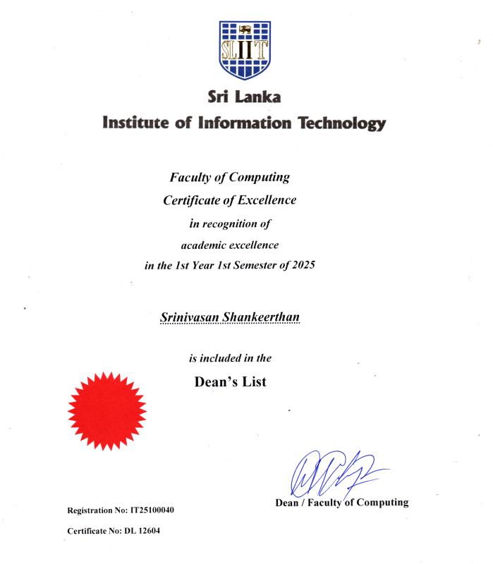
Dean's List Award - Year 1 Semester 1
Awarded Dean's List recognition for Year 1 Semester 1 with a GPA of 3.77, reflecting strong academic performance, consistency, and dedication to excellence in undergraduate studies.
Best Student Award
Awarded for outstanding academic performance, leadership, extracurricular activities, and overall contribution to the school community.
Let's Connect
I'm currently looking for new opportunities and collaborations. Feel free to reach out!